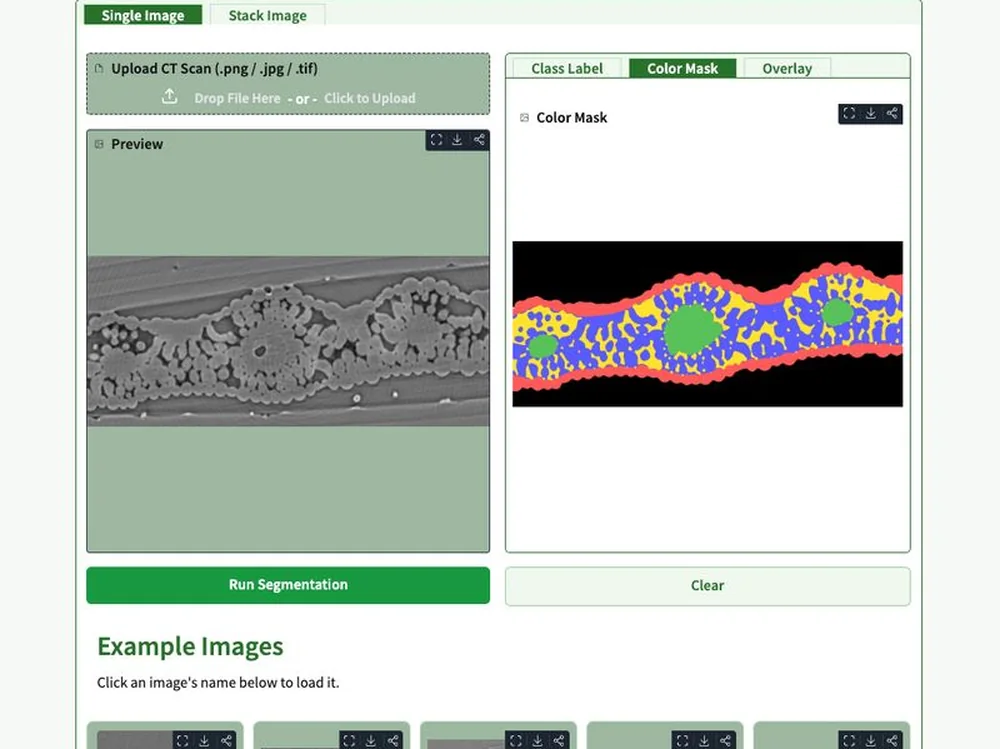
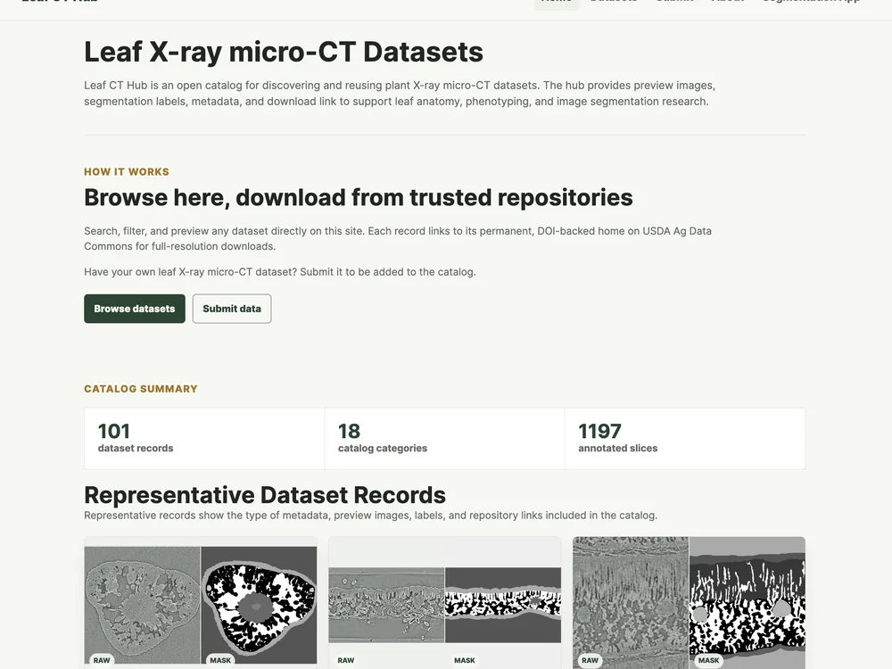
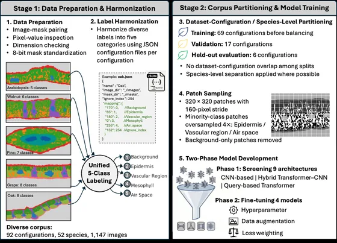
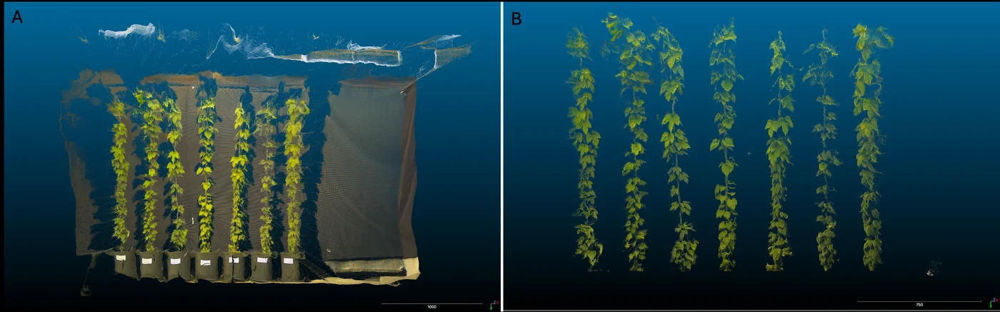
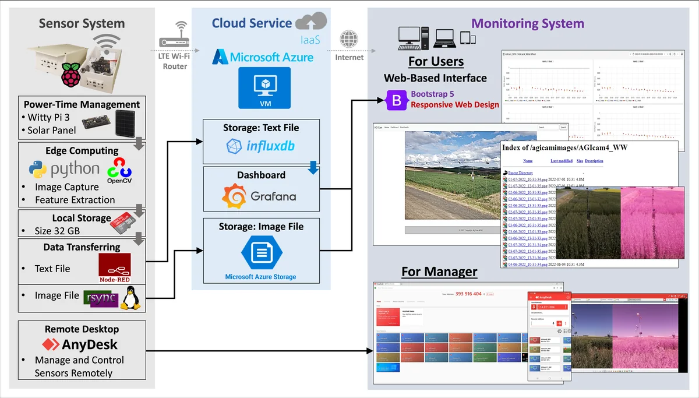
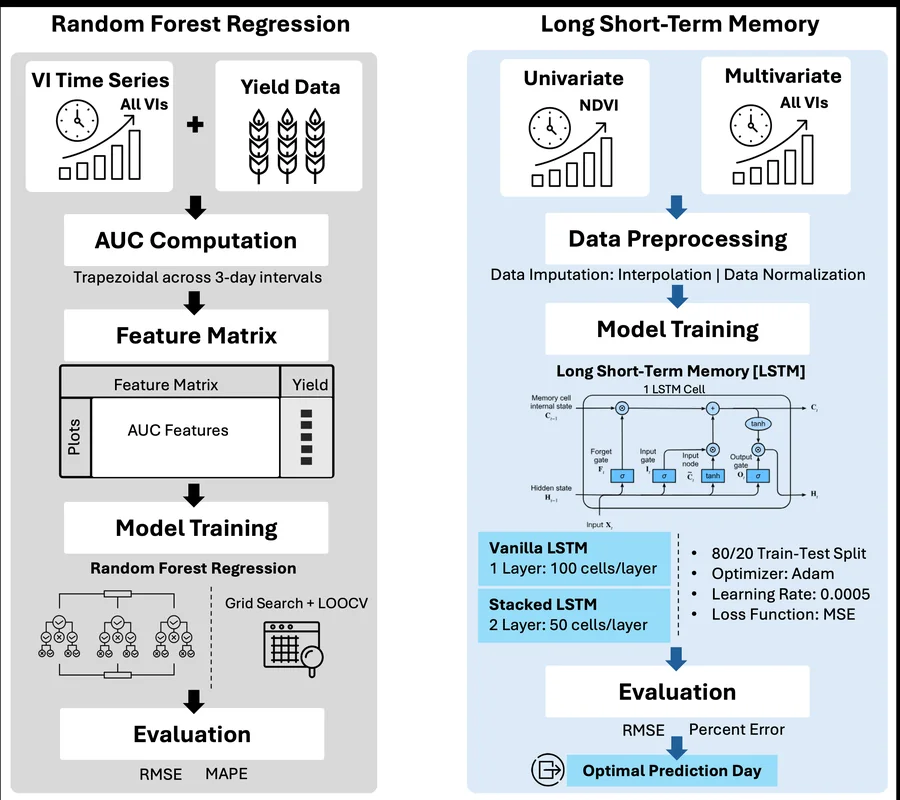
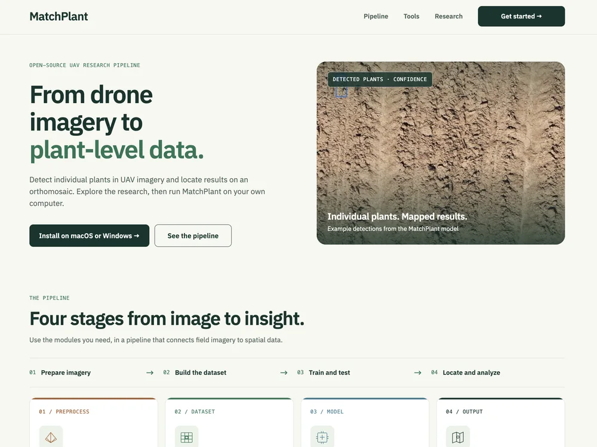

Open-Source Tools
I develop open-source sensing systems, analysis tools, and shared resources for plant phenotyping and digital agriculture.
X-ray microCT
Inside plants and soil
Leaf-CT Released
Tools and shared data for leaf tissue analysis

Segmentation app
Segment leaf tissues in individual images or TIFF stacks, then download segmentation masks and tissue statistics.
Online appRun the app in your browser without installing software.
Segmentation app user guideOther ways to run
- Google ColabSelect a T4 GPU, run the notebook cells, and open the app link.
- Local installationSet up Python 3.10 or later, install the required packages, and launch the app.

Dataset Hub
Explore shared leaf microCT scans, segmentation labels, and dataset metadata.
Browse datasets
Training pipeline
Prepare datasets, compare model architectures, and fine-tune segmentation models for your plant species.
Training code & instructions
Proximal Sensing
Around a plant
3D phenotyping Released
Plant segmentation and volume estimation from 3D camera data

3D plant point cloud segmentation
IoT Sensing
Across crop rows
AGIcam Released
IoT cameras for automated field phenotyping

Sensor, cloud, and monitoring system 
Time-series analysis and yield prediction
UAV Imaging
Above a field
MatchPlant Released
UAV phenotyping pipeline and dashboard for Windows and macOS

MatchPlant: installation guide MatchPlant dashboard: walkthrough video
More repositories and documentation are on GitHub.